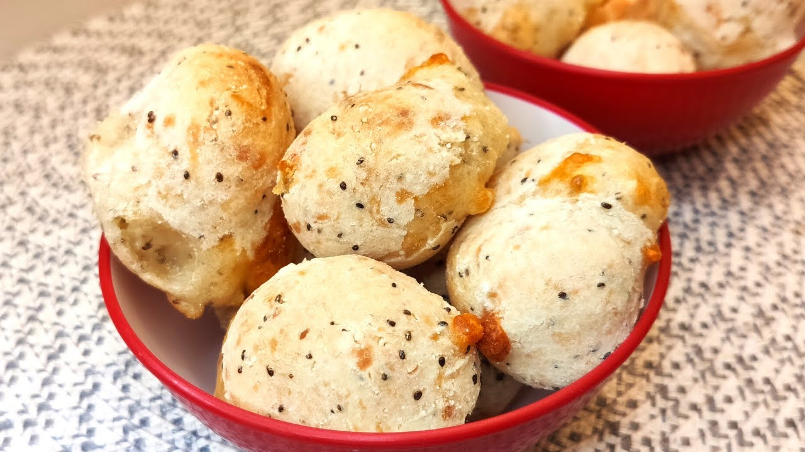
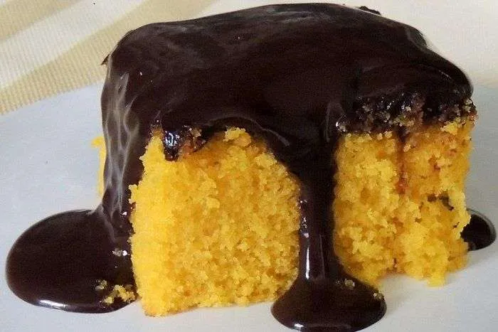

← Voltar ao menu principal
Sobre as PANCs
Exemplos
Referências Bibliográficas
Receitas com PANCs
Pão de Queijo de Inhame: Ingredientes
400g de inhame cozido
2 xícaras de polvilho doce
1 xícara de queijo ricota ralado
3 colheres de sopa de óleo de coco
1 pitada de sal
3 colheres (sopa) de queijo parmesão ralado
3 colheres (sopa) de grãos de linhaça dourada

Bolo de Cenoura: Ingredientes
2 cenouras médias
3 ovos
1/2 xícara de óleo
1 xícara de leite
1/2 xícara de açúcar
2 xícaras de farinha de trigo sem fermento
1 colher de sopa de fermento

☰